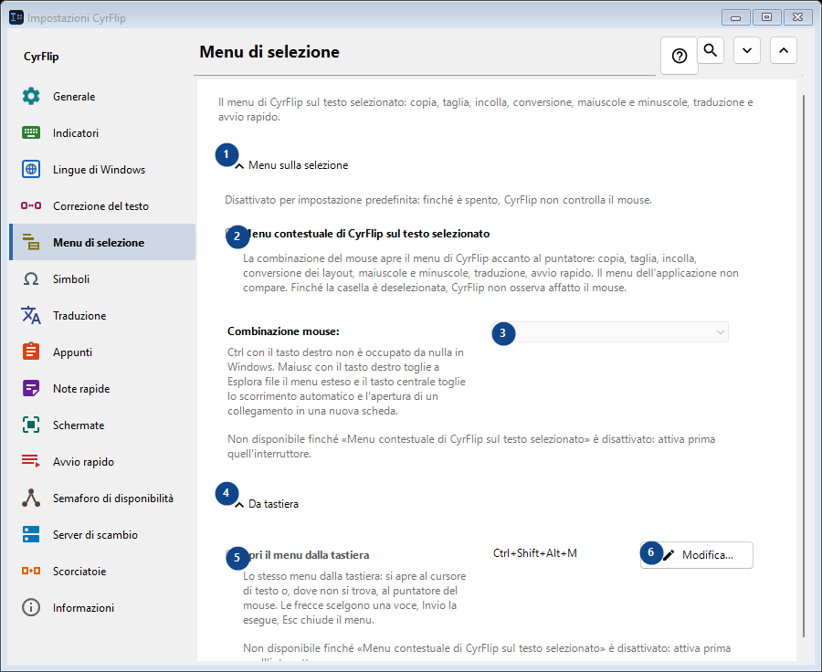
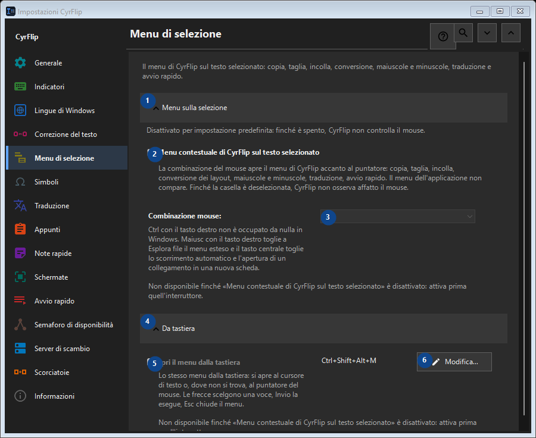

Menu di selezione
A cosa serve
Il menu di CyrFlip sul testo selezionato: copia, taglia, incolla, conversione, maiuscole e minuscole, traduzione e avvio rapido.


Ordine delle operazioni
Le impostazioni si applicano subito. Non serve un ordine preciso; usa i gruppi qui sotto.
Elementi
1. Menu sulla selezione
Usa questo comando per l’azione indicata. Leggi ogni richiesta di conferma prima di accettare.
Le tue scorciatoie2. Menu contestuale di CyrFlip sul testo selezionato
La combinazione del mouse apre il menu di CyrFlip accanto al puntatore: copia, taglia, incolla, conversione dei layout, maiuscole e minuscole, traduzione, avvio rapido. Il menu dell'applicazione non compare. Finché la casella è deselezionata, CyrFlip non osserva affatto il mouse.
Le tue scorciatoie3. Combinazione mouse
Non disponibile finché «Menu contestuale di CyrFlip sul testo selezionato» è disattivato: attiva prima quell'interruttore. Questo elemento non è disponibile. Attiva prima la funzione o seleziona una voce.
Le tue scorciatoie4. Da tastiera
Usa questo comando per l’azione indicata. Leggi ogni richiesta di conferma prima di accettare.
Le tue scorciatoie5. Apri il menu dalla tastiera
Non disponibile finché «Menu contestuale di CyrFlip sul testo selezionato» è disattivato: attiva prima quell'interruttore. Questo elemento non è disponibile. Attiva prima la funzione o seleziona una voce.
Le tue scorciatoie6. Modifica - Apri il menu dalla tastiera
Usa questo comando per l’azione indicata. Leggi ogni richiesta di conferma prima di accettare.
Le tue scorciatoie